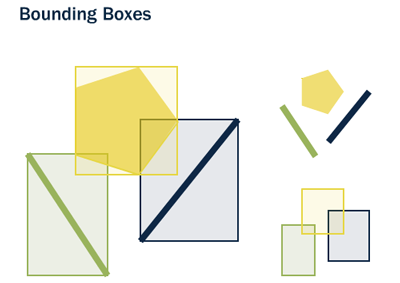
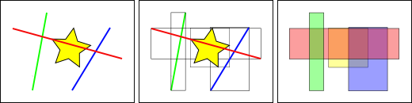

Note
| Fecha | Autores |
|---|---|
| 1 Noviembre 2012 |
|
| 15 Octubre 2013 |
|
©2012 Micho García
Excepto donde quede reflejado de otra manera, la presente documentación se halla bajo licencia : Creative Commons (Creative Commons - Attribution - Share Alike: http://creativecommons.org/licenses/by-sa/3.0/deed.es)
La indexación espacial es una de las funcionalidades importantes de las bases de datos espaciales. Los índices consiguen que las búsquedas espaciales en un gran número de datos sean eficientes. Sin indexación, la búsqueda se realizaría de manera secuencial teniendo que buscar en todos los registros de la base de datos. La indexación organiza los datos en una estructura de árbol que es recorrida rápidamente en la búsqueda de un registro.
Las base de datos estándar crean un árbol jerárquico basados en los valores de las columnas. Los índices espaciales funcionan de una manera diferente, los índices no son capaces de indexar las geometrías, e indexarán las cajas (box) de las geometrías.

La caja (box) es el rectángulo definido por las máximas y mínimas coordenadas X e Y de una geometría.

En la figura se puede observar que solo la linea intersecta a la estrella amarilla, mientras que si utilizamos los índices comprobaremos que la caja amarilla es intersectada por dos figuras la caja roja y la azul. El camino eficiente para responder correctamente a la pregunta ¿qué elemento intersecta la estrella amarilla? es primero responder a la pregunta ¿qué cajas intersectan la caja amarilla? usando el índice (consulta rápida) y luego calcular exactamente ¿quien intersecta a la estrella amarilla? sobre el resultado de la consulta de las cajas.
La sintaxis será la siguiente:
CREATE INDEX [Nombre_del_indice] ON [Nombre_de_tabla] USING GIST ([campo_de_geometria]);
Esta operación puede requerir bastante tiempo en tablas de gran tamaño.
La mayor parte de las funciones en PostGIS (ST_Contains, ST_Intersects, ST_DWithin, etc) incluyen un filtrado por índice automáticamente.
Para hacer que una función utilice el índice, hay que hacer uso del operador &&. Para las geometrías, el operador && significa “la caja que toca (touch) o superpone (overlap)” de la misma manera que para un número el operador = significa “valores iguales”
A partir de las capas ríos y suelos calcularemos el número de ríos que intersectan con los tipos de suelo:
# select count(*) from suelos su, rios ri where (su.geom && ri.geom) and st_relate(su.geom, ri.geom, 'T********');
count
----------
5004
Esta consulta tardará del orden de 10s
# select count(*) from suelos su, rios ri where (su.geom && ri.geom)
count12739
En este último caso ha tardad muy pocos segundos.
Si eliminamos los índices y repetimos la consulta, veremos que el tiempo de cálculo se incrementa
El planificador de PostGIS se encarga de mantener estadísticas sobre la distribución de los datos de cada columna de la tabla indexada. Por defecto PostgreSQL ejecuta la estadísticas regularmente. Si hay algún cambio grande en la estructura de las tablas, es recomendable ejecutar un ANALYZE manualmente para actualizar estas estadísticas. Este comando obliga a PostgreSQL a recorrer los datos de las tablas con columnas indexadas y actualizar sus estadísticas internas.
No solo con crear el índice y actualizar las estadísticas obtendremos una manera eficiente de manejar nuestras tablas. La operación VACUUM debe ser realizada siempre que un indice sea creado o después de un gran número de UPDATEs, INSERTs o DELETEs. El comando VACUUM obliga a PostgreSQL a utilizar el espacio no usado en la tabla que dejan las actualizaciones y los borrados de elementos.
Hacer un VACUUM es crítico para la eficiencia de la base de datos. PostgreSQL dispone de la opción Autovacuum. De esta manera PostgreSQL realizará VACUUMs y ANALYZEs de manera periodica en función de la actividad que haya en la tabla:
VACUUM ANALYZE [Nombre_tabla]
VACUUM ANALYZE [Nombre_tabla] ([Nombre_columna])
Esta orden actualiza las estadísticas y elimina los datos borrados que se encontraban marcados como eliminados.
¿Que pasa si ejecutamos la consulta invirtiendo el orden de los predicados?:
# select count(*) from suelos su, rios ri where st_relate(su.geom, ri.geom, 'T********') and (su.geom && ri.geom);
Comprobaremos que el resultado es el mismo, ya que el orden en las consultas es indiferente para PostGIS siendo el planificador el que gestiona esto.
Para utilizar el planificador:
EXPLAIN [ ANALYZE ] [ VERBOSE ] sentenciaSQL
ANALYZE ejecuta la consulta y muestra el plan de la misma mientras que si no se indica, PostgreSQL realiza una aproximación:
# explain analyze select count(*) from suelos su, rios ri where (su.geom && ri.geom)
- Aggregate (cost=415523.85..415523.86 rows=1 width=0) (actual time=27952.663..27952.664 rows=1 loops=1)
- -> Nested Loop (cost=0.00..415494.59 rows=11703 width=0) (actual time=2.200..27944.733 rows=12379 loops=1)
Join Filter: (su.geom && ri.geom) -> Seq Scan on suelos su (cost=0.00..513.71 rows=3871 width=6752) (actual time=0.007..2.607 rows=3871 loops=1) -> Seq Scan on rios ri (cost=0.00..82.09 rows=2009 width=832) (actual time=0.002..0.958 rows=2009 loops=3871)
Total runtime: 27952.715 ms”
# create index suelos_geom_gist on suelos using gist(geom); # create index rios_geom_gist on rios using gist(geom);
- Aggregate (cost=1937.17..1937.18 rows=1 width=0) (actual time=218.263..218.264 rows=1 loops=1)
- -> Nested Loop (cost=0.00..1907.91 rows=11703 width=0) (actual time=0.065..213.180 rows=12379 loops=1)
-> Seq Scan on suelos su (cost=0.00..513.71 rows=3871 width=6752) (actual time=0.005..2.644 rows=3871 loops=1) -> Index Scan using rios_geom_gist on rios ri (cost=0.00..0.35 rows=1 width=832) (actual time=0.035..0.045 rows=3 loops=3871)
Index Cond: (su.geom && geom)”
Total runtime: 218.310 ms
En el ejemplo anterior se realizaba la consulta con la función ST_Relate que no hace uso de los índices espaciales, de ahí que le hayamos forzado el uso mediante el operador de caja. ¿Qué resultado muestra el planificador si utilizamos simplemente ST_Intersects?
- Aggregate (cost=2885.42..2885.43 rows=1 width=0) (actual time=1791.892..1791.892 rows=1 loops=1)
- -> Nested Loop (cost=0.00..2875.66 rows=3901 width=0) (actual time=0.806..1786.258 rows=5004 loops=1)
Join Filter: _st_intersects(su.geom, ri.geom) -> Seq Scan on suelos su (cost=0.00..513.71 rows=3871 width=6752) (actual time=0.007..4.484 rows=3871 loops=1) -> Index Scan using rios_geom_gist on rios ri (cost=0.00..0.35 rows=1 width=832) (actual time=0.031..0.045 rows=3 loops=3871)
Index Cond: (su.geom && geom)Total runtime: 1791.959 ms
Vemos que es un resultado similar al anterior y que hace uso del operador de caja. Esto es porque en la definición de la función, ya lleva embebido la llamada al operador de caja:
CREATE OR REPLACE FUNCTION st_intersects(geom1 geometry, geom2 geometry)
RETURNS boolean AS
'SELECT **$1 && $2** AND _ST_Intersects($1,$2)'
LANGUAGE sql IMMUTABLE
COST 100;
ALTER FUNCTION st_intersects(geometry, geometry)
OWNER TO alumno;
COMMENT ON FUNCTION st_intersects(geometry, geometry) IS 'args: geomA, geomB - Returns TRUE if the Geometries/Geography "spatially intersect in 2D" - (share any portion of space) and FALSE if they dont (they are Disjoint). For geography -- tolerance is 0.00001 meters (so any points that close are considered to intersect)';
Esta función en SQL lo que hace es llamar a una función _ST_Intersects cuya definición será:
CREATE OR REPLACE FUNCTION _st_intersects(geom1 geometry, geom2 geometry)
RETURNS boolean AS
'$libdir/postgis-2.0', 'intersects'
LANGUAGE c IMMUTABLE STRICT
COST 100;
ALTER FUNCTION _st_intersects(geometry, geometry)
OWNER TO alumno;
Que es la que se comunica directamente con la librería GEOS.